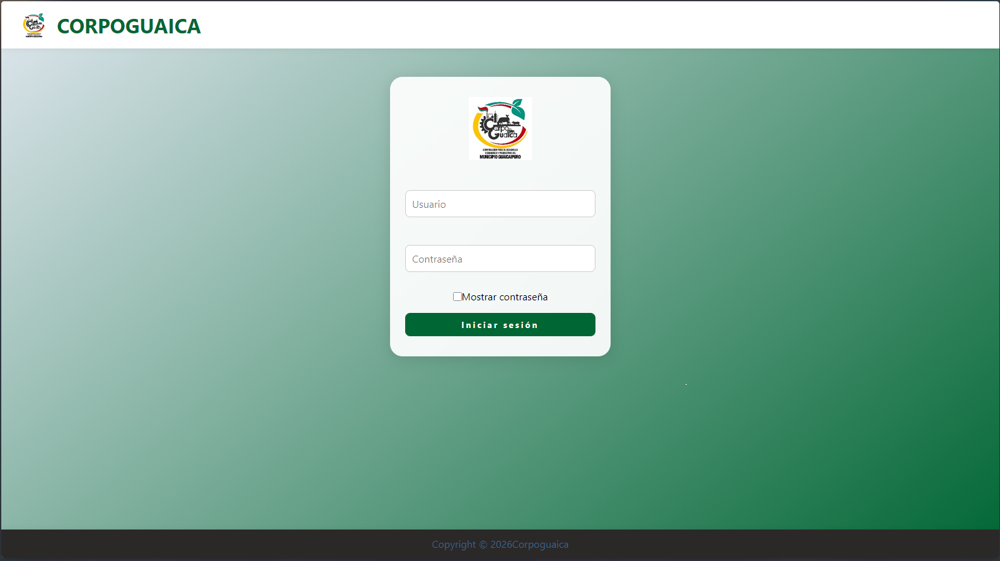
Login
Pantalla de acceso al sistema con autenticación segura para usuarios registrados.

Usuario no encontrado
Vista de error que informa cuando el usuario ingresado no existe en la base de datos.

Contraseña incorrecta
Aviso de seguridad que aparece cuando las credenciales ingresadas no coinciden.
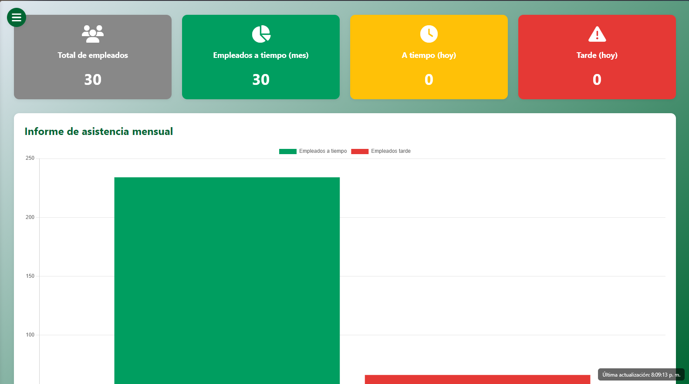
Panel inicial
Vista principal del sistema con acceso rápido a las funciones más utilizadas.
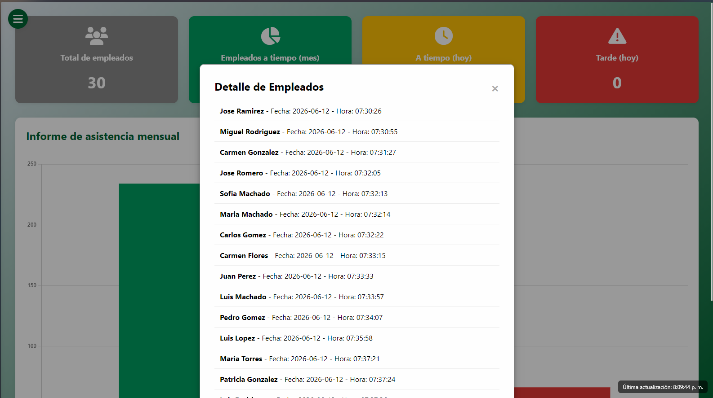
Detalles de empleados
Módulo para consultar información completa y específica de cada empleado.
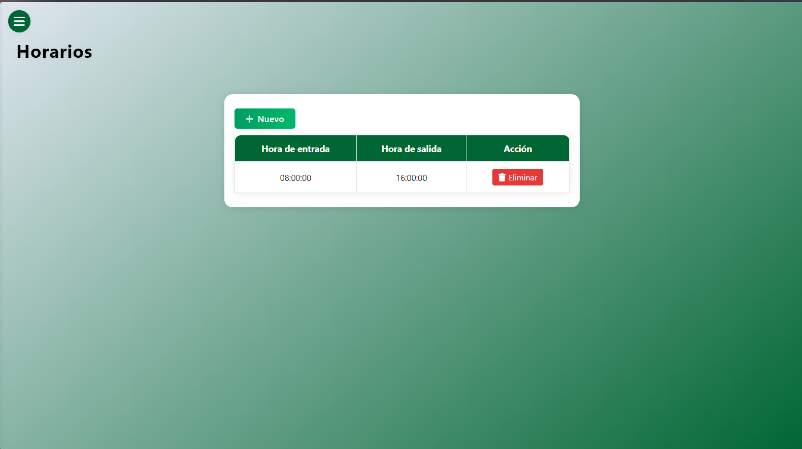
Horarios
Pantalla para definir y administrar los turnos y horarios del personal.
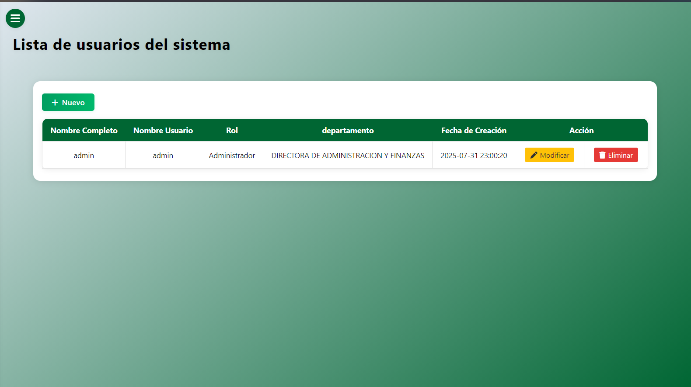
Lista de usuarios
Vista que permite revisar el listado de usuarios registrados y su estado.
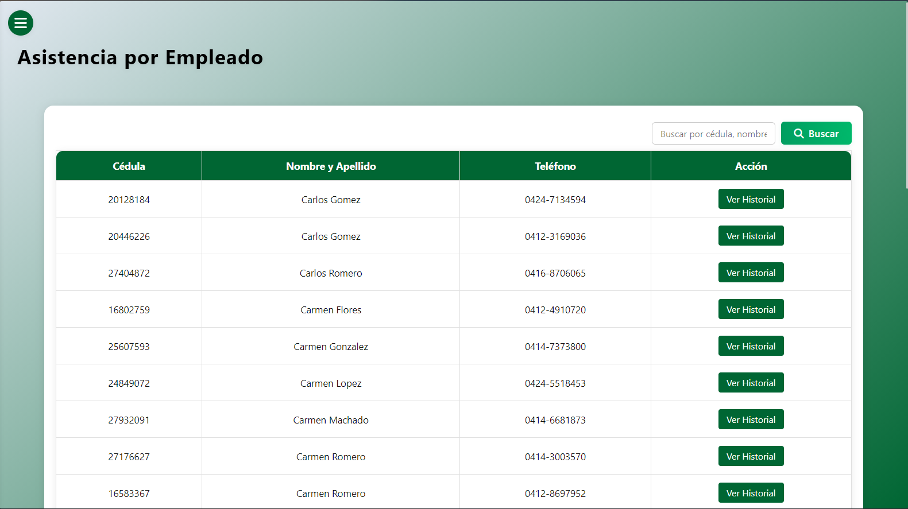
Asistencia de empleado
Registro individual de entradas y salidas del personal.
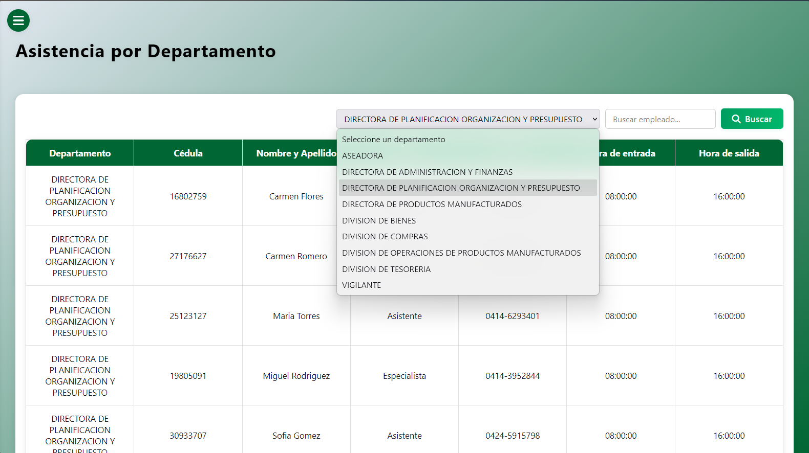
Asistencia por departamento
Vista consolidada del control de asistencia por área o unidad organizativa.
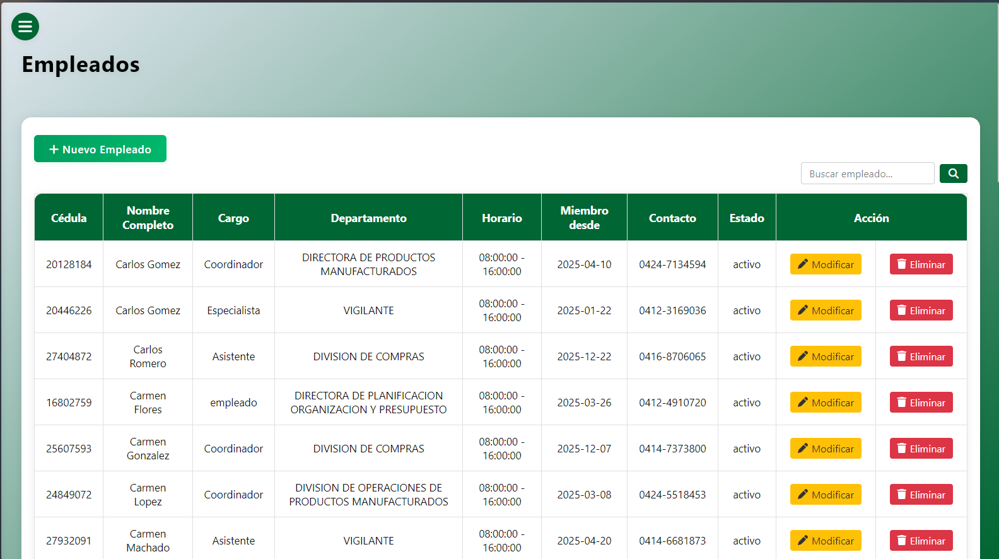
Empleados
Sección para gestionar la información y datos del personal registrado.
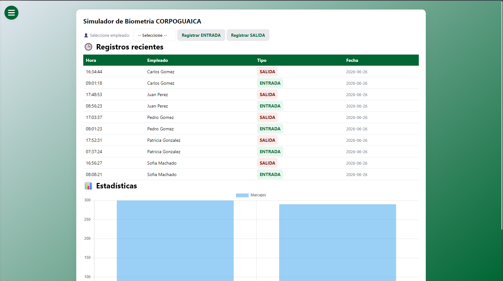
Biométrico
Configuración y supervisión del módulo de reconocimiento biométrico.
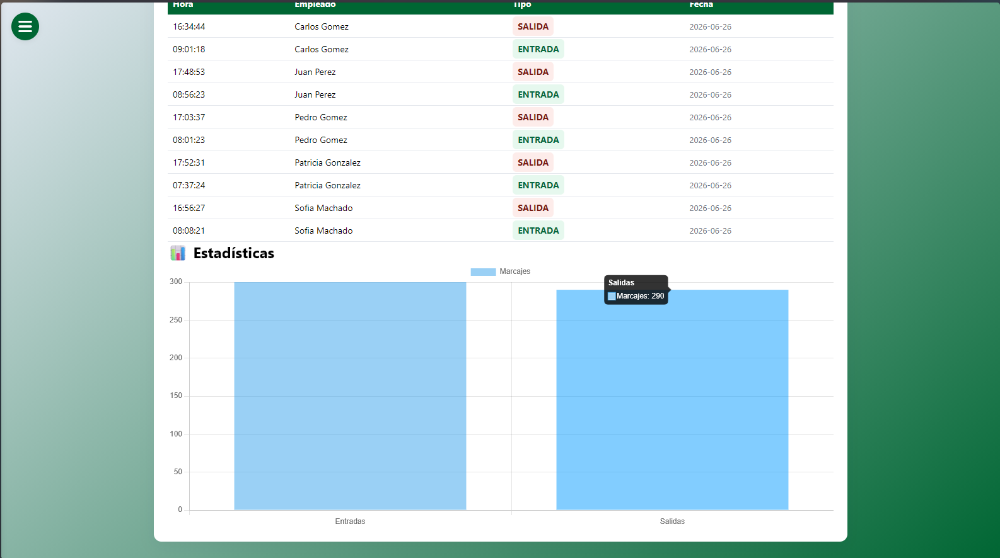
Entrada y salida biométrica
Registro automático de ingresos y egresos mediante lectura biométrica.
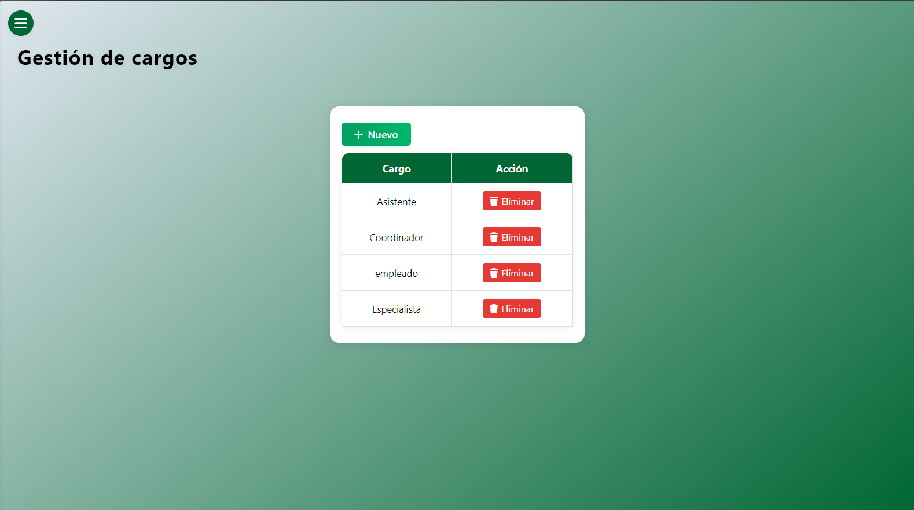
Cargos
Módulo para administrar los cargos y puestos del personal.
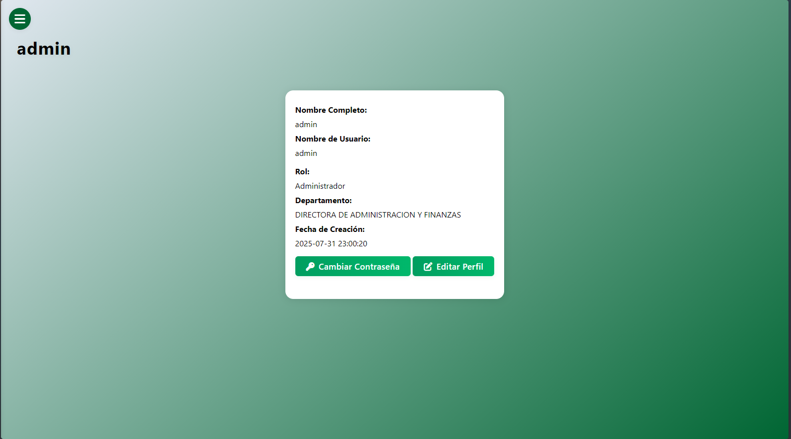
Configuración de administrador
Opciones de administración y parámetros del sistema para usuarios con permisos elevados.
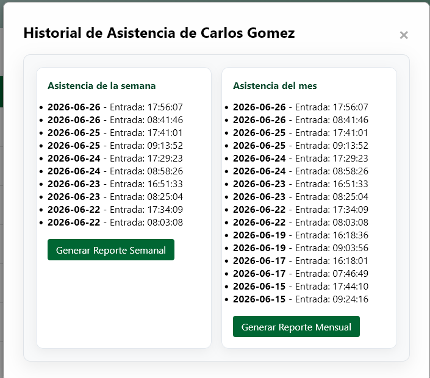
Historial de asistencia
Consulta del historial completo de registros de ingreso y salida del personal.